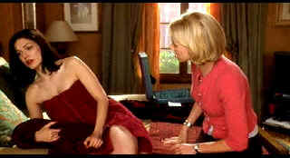

| Mulholland Dr./ B+, B+ |
| Universal2001/147/ANA 1.85 |
What is it about Mulholland Dr. that generates such magic? It is hard
to say. Some of it is evidently stiff, awkward, artificial, yet it has a
magnetic power. It is entertaining, mysterious, funny, outrageous and
daring. Mulholland Dr. can even make you laugh out loud. The skewed sense
of humor plays against the heavy-lidded noir elements effectively. This is
one strange film, a real trip.
 |
|
What a headache! ©Universal
|
The twists and turns begin along the road when
Rita staggers in a daze from a car accident. Finding shelter in a quaint
LA courtyard apartment complex, Rita meets Betty and things really start
to happen. Betty and Rita are like a pair of
refugees from the house of mirrors in a Nancy Drew girl detective
novel, but its lots of
fun. The unexpected twists and turns are wacky, but then, are
they really a surprise in a David Lynch film. Director Lynch is traveling
the familiar unusual road, relishing the curves like race car driver running
through the gears.
It appears that significant threads of this thick tapestry get lost
in the maze of Lynch's imagination, but the film was purportedly culled by
Lynch from scenes for a television pilot which never saw the light of the
small screen. Perhaps the ragged threads work as false leads. Were they
meant to broaden out into separate series stories? It doesn't really
matter since the whole of Mulholland Dr. delivers an undiluted dose
of pleasure.
Naomi Watts is a constant blast of middle America
sunshine in the role of Betty, newly arrived in Hollywood for her big shot
at stardom. Talk about a black and white soda, Watts blends perfectly with
Laura Harring's Rita, the mysterious doll who owes more than a nod to
scores of forties noir flicks.
Interesting photography adds to the ambiance with
stylized angles emphasizing the mysterious elements. The camera is
extremely busy; it is always moving, very slowly, up and down,
side-to-side, promoting the tension.
Mulholland Dr. comes to life in a comfortable looking transfer. It is
quite sharp with no edginess. Details are very stable even in pans. The
Silencio sequences are positively lustrous with excellent shadow detail.
Minute detail in the nighttime LA skyline is meticulously rendered. Outstanding
score from Angelo Badalamenti draws you into the film with a mysterious
feel, almost "noirotic," from the get-go. The DTS surround sound provides
excellent spatial detail.
|
|
|
|

Selections from the Feature
Archive include articles on
Akira Kurosawa, Frank
Darabont, Blonde
Bimbos, Hollywood
Street Gangs, or Vietnam:
The Hollywood Pariah, and many more....
Film noir: The phrase hangs awkwardly on the tongue,
shadowy images peek out from behind half-closed doors. Click on the Noir
and Noir Again symbol for a look into the dark spaces of
Hollywood's revisiting of film noir.

The Movie Poster
Archive include extensive poster images from the films of stars like Susan
Hayward, Kirk Douglas, Katharine Hepburn and many more. Our featured
star is Robert
Mitchum

General,
The /A,B+

Irish gang leader Martin Cahill through the lens of John Boorman makes
fascinating viewing. Watch it in black and white, Boorman's choice.

 The
Cinematheque is a
cultural, arts organization that programs year-round specialty film series
at the newly renovated, landmark 1922 Egyptian
Theatre on Hollywood Boulevard! The
Cinematheque is a
cultural, arts organization that programs year-round specialty film series
at the newly renovated, landmark 1922 Egyptian
Theatre on Hollywood Boulevard!
DVDRAMA
One of France's outstanding DVD resources. Par le vous DVD?

"CinemaQuest has matched the correct TV color of gray in a light
fixture."__Joe Kane
Monitor bias lighting in a pre-packaged configuration. Take the strain off
your eyes.
|